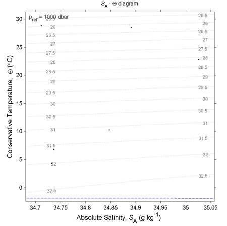

Contents
USAGE:
gsw_SA_CT_plot(SA,CT,p_ref,isopycs,title_string)
DESCRIPTION:
Produces a plot of Absolute Salinity - Conservative Temperature
profiles. The diagram also plots the Conservative Temperature freezing
point for p = 0 dbar assuming the seawater is completely saturated with
dissolved air and user defined potential density contours. This
function uses the computationally-efficient 75-term expression for
specific volume in terms of SA, CT and p (Roquet et al.,2015).
Note that the 75-term equation has been fitted in a restricted range of
parameter space, and is most accurate inside the "oceanographic funnel"
described in McDougall et al. (2003). The GSW library function
"gsw_infunnel(SA,CT,p)" is avaialble to be used if one wants to test if
some of one's data lies outside this "funnel".
INPUT:
SA = Absolute Salinity [ g/kg ]
CT = Conservative Temperature [ deg C ]
p = sea pressure [ dbar ]
( i.e. absolute pressure - 10.1325 dbar )
Optional:
p_ref = reference sea pressure for the isopycnals [ dbar ]
(i.e. absolute reference pressure - 10.1325 dbar)
If it is not suppled a default of 0 dbar is used.
isopycs = isopycnals, can be either an array of isopynals or the
number of isopynals to appear on the plot. If it is not
supplied the programme defaults to 5 isopynals.
title_string = title text to appear at the top of the plot.
SA & CT need to have the same dimensions.
p_ref should be a scalar, (i.e. have dimensions 1x1).
isopycs can be either 1x1 or 1xN or Mx1
EXAMPLE:
SA = [34.7118; 34.8915; 35.0256; 34.8472; 34.7366; 34.7324;]
CT = [28.8099; 28.4392; 22.7862; 10.2262; 6.8272; 4.3236;]
p = [ 10; 50; 125; 250; 600; 1000;]
p_ref = 1000
isopycs = [24:0.5:33];
gsw_SA_CT_plot(SA,CT,p_ref,isopycs,'\it{S}\rm_A - {\Theta} diagram')

AUTHOR:
Rich Pawlowicz [ help@teos-10.org ]
Note. This function was extracted and adapted from Rich Pawlowicz's
ocean toolbox.
Modified:
Paul Barker & Trevor McDougall
VERSION NUMBER:
3.05 (21st May, 2015)
REFERENCES:
IOC, SCOR and IAPSO, 2010: The international thermodynamic equation of
seawater - 2010: Calculation and use of thermodynamic properties.
Intergovernmental Oceanographic Commission, Manuals and Guides No. 56,
UNESCO (English), 196 pp. Available from the TEOS-10 web site.
McDougall, T.J., D.R. Jackett, D.G. Wright and R. Feistel, 2003:
Accurate and computationally efficient algorithms for potential
temperature and density of seawater. J. Atmosph. Ocean. Tech., 20,
pp. 730-741.
Roquet, F., G. Madec, T.J. McDougall and P.M. Barker, 2015: Accurate
polynomial expressions for the density and specific volume of seawater
using the TEOS-10 standard. Ocean Modelling, 90, pp. 29-43.
http://dx.doi.org/10.1016/j.ocemod.2015.04.002
This software is available from http://www.TEOS-10.org